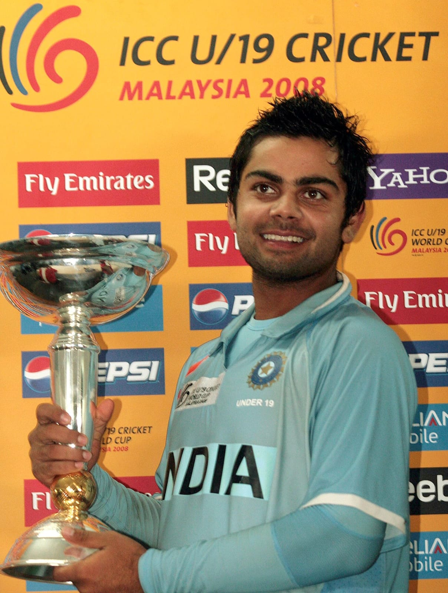
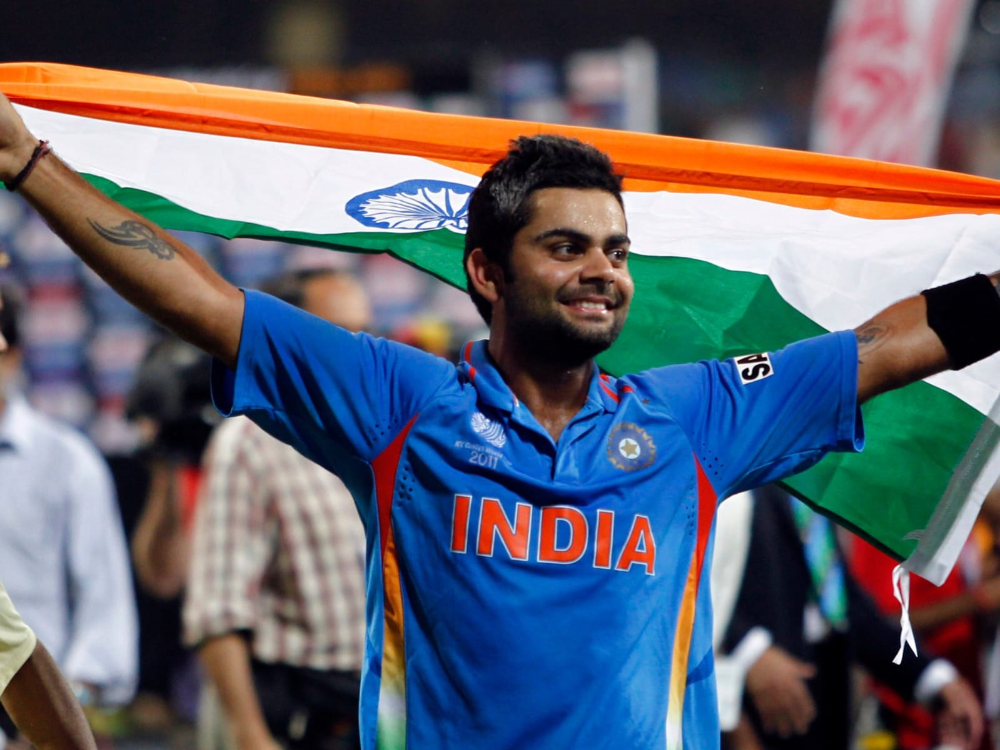
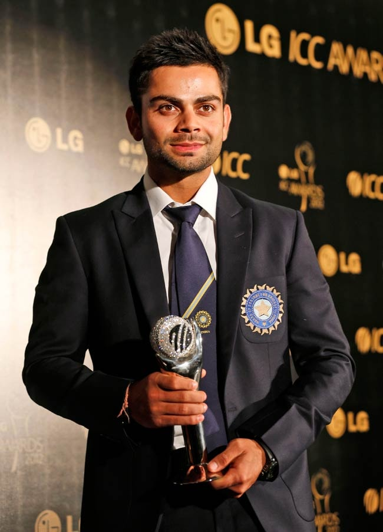
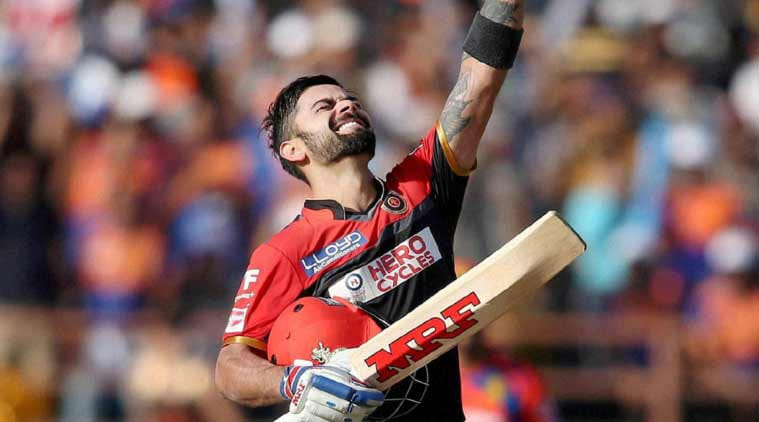
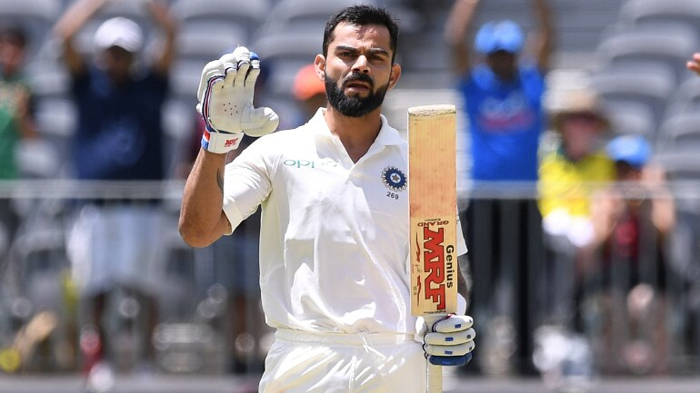
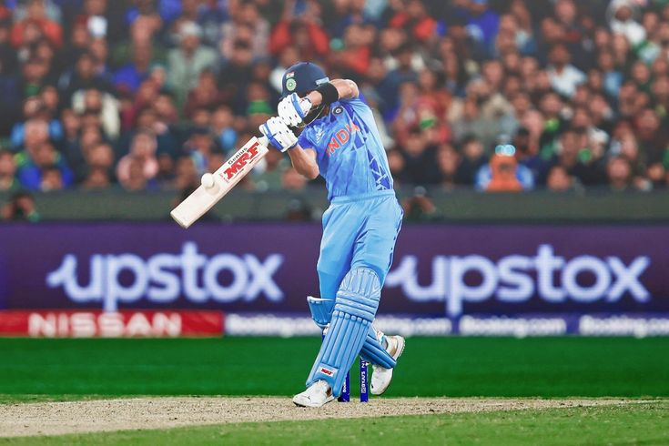
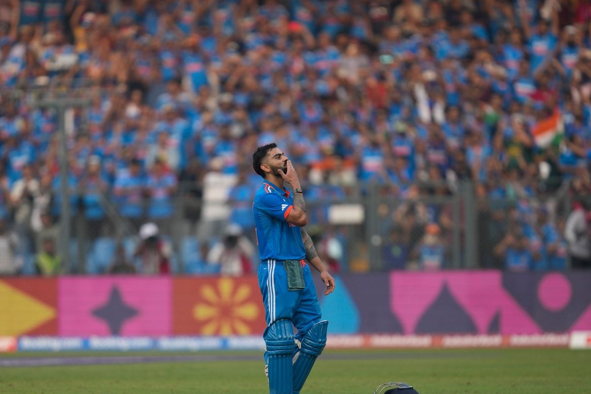
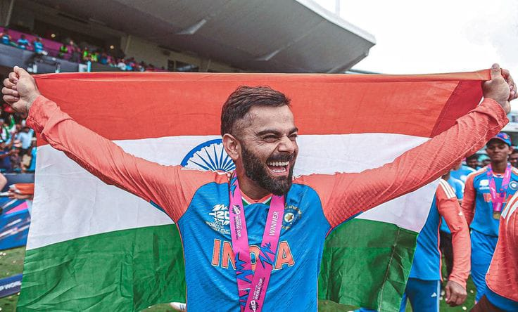

🌟 2008

- 🏆 Won U-19 World Cup as Captain 🇮🇳
- 👕 Made ODI debut vs Sri Lanka 🇱🇰
🌟 2011

- 🏆 Part of India’s World Cup-winning team 🏆🇮🇳
- 💯 Scored century vs Bangladesh in WC opener
🌟 2012

- 🔥 Iconic 133* vs Sri Lanka in Hobart ⚡
- 🥇 ICC ODI Player of the Year
🌟 2016

- 💥 82* vs Australia in T20 WC (Mohali classic)
- 🥇 ICC T20I Player of the Year
🌟 2018

- 💯 593 runs vs England in Tests
- 🏅 ICC Cricketer of the Year & Test Player of the Year
🌟 2022

- 💀 the shot of the decade vs Pakistan in T20 WC
- 🔥The chase master chase down the target by an unbeaten 82 from (53 balls)
jpeg
🌟 2023

- 🔥 765 runs in WC 2023 (Most ever)
- 👑 Broke Sachin’s record: 50 ODI centuries
🌟 2024

- 🏆 Helped India win T20 World Cup 🌍
- 🔥 Match-winning knock in final vs South Africa